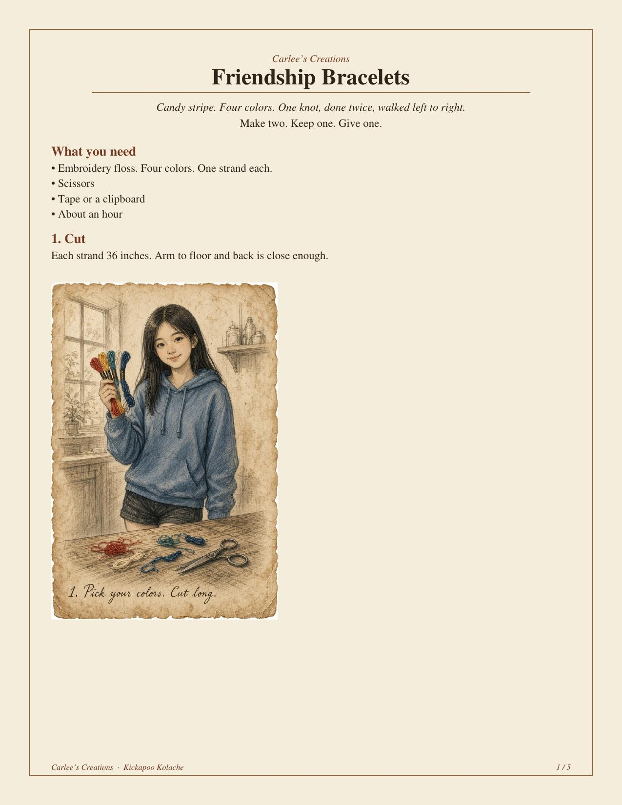
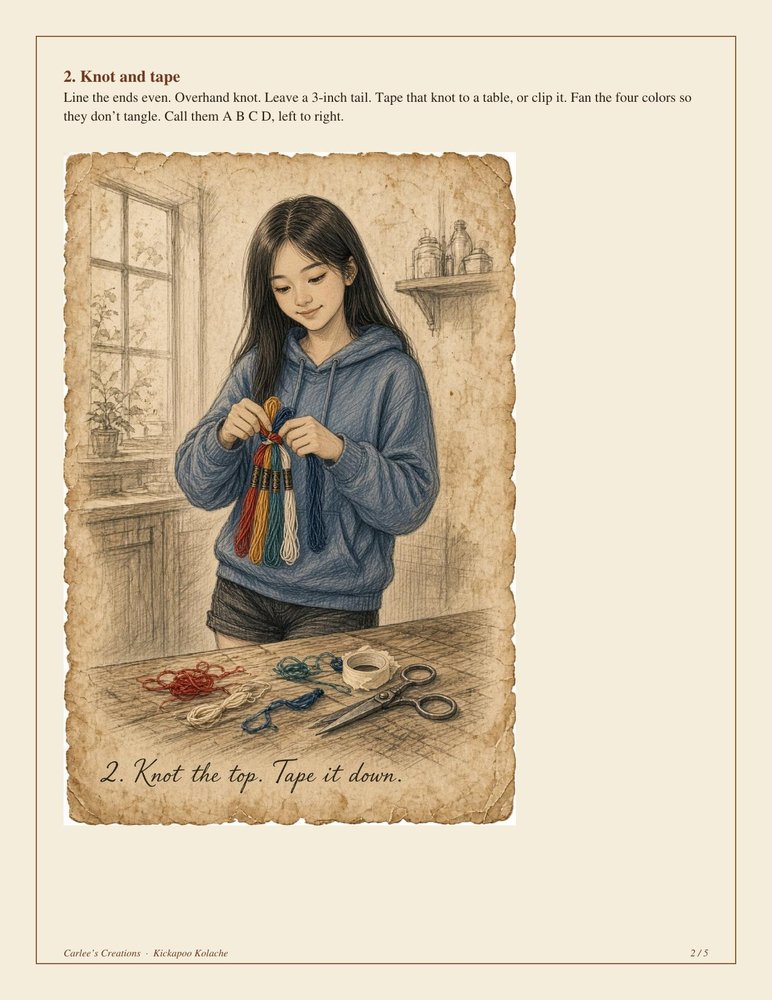
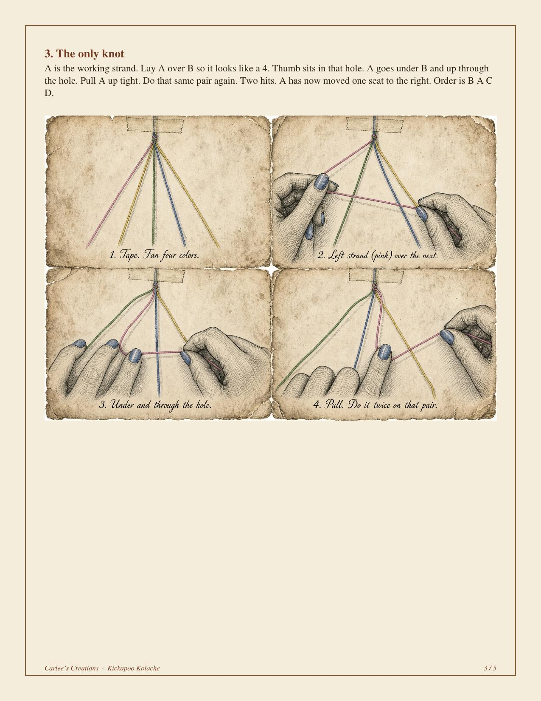
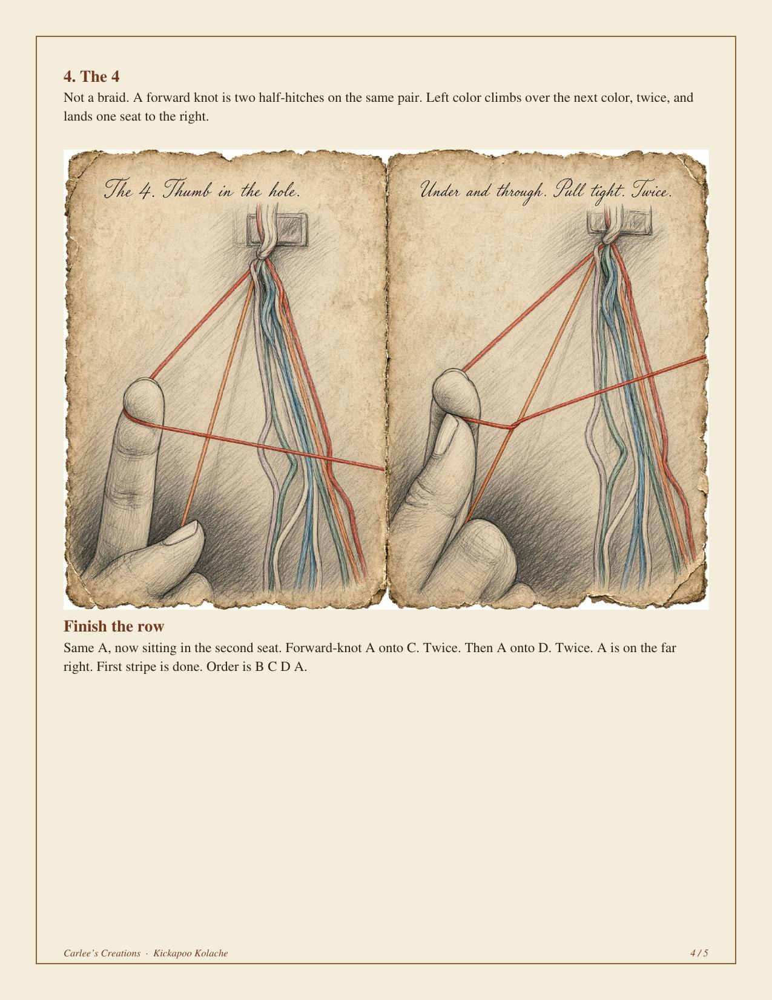
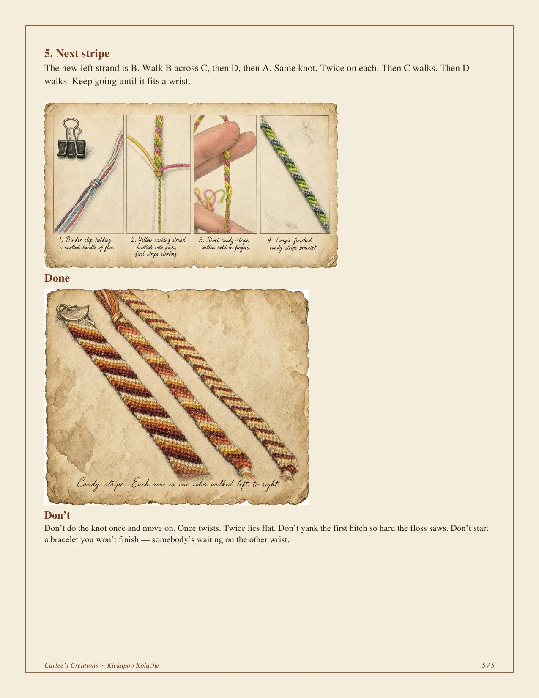

Neighbor Columns · Carlee’s Creations
Friendship Bracelets
Candy stripe. Four colors. One knot, done twice, walked left to right. Make two. Keep one. Give one.
What you need
- Embroidery floss. Four colors. One strand each.
- Scissors
- Tape or a clipboard
- About an hour
Steps
-
Cut. Each strand 36 inches. Arm to floor and back is close enough.

What you need · Cut -
Knot and tape. Line the ends even. Overhand knot. Leave a 3-inch tail. Tape that knot to a table, or clip it. Fan the four colors so they don’t tangle. Call them A B C D, left to right.

Knot and tape · A B C D -
The only knot. A is the working strand. Lay A over B so it looks like a 4. Thumb sits in that hole. A goes under B and up through the hole. Pull A up tight. Do that same pair again. Two hits. A has now moved one seat to the right. Order is B A C D.

The only knot — twice on each pair -
The 4. Not a braid. A forward knot is two half-hitches on the same pair. Left color climbs over the next color, twice, and lands one seat to the right.
Finish the row. Same A, now sitting in the second seat. Forward-knot A onto C. Twice. Then A onto D. Twice. A is on the far right. First stripe is done. Order is B C D A.

Finish the row · first stripe -
Next stripe. The new left strand is B. Walk B across C, then D, then A. Same knot. Twice on each. Then C walks. Then D walks. Keep going until it fits a wrist.

Done
Don’t
- Don’t do the knot once and move on. Once twists. Twice lies flat.
- Don’t yank the first hitch so hard the floss saws.
- Don’t start a bracelet you won’t finish — somebody’s waiting on the other wrist.